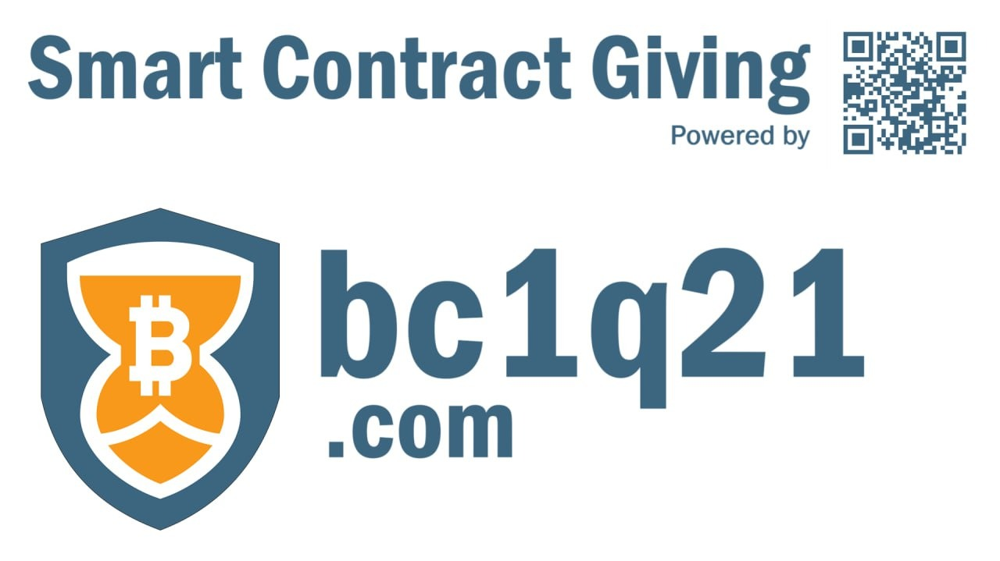

Smart Contract Giving, powered by bc1q21.com
Smart Contract Giving, powered by bc1q21.com, is a Bitcoin-native platform that allows you to send Bitcoin into the future using Bitcoin's built-in time-lock functionality.
You can create gifts for family, friends, charities, savings goals, inheritance planning, or long-term support arrangements that become available at dates you choose.
You do.
bc1q21 never takes custody of your Bitcoin and never controls your funds. The platform simply helps you create instructions that are carried out directly by the Bitcoin blockchain.
bc1q21 is designed for Bitcoin users who want to:
• Give meaningful gifts
• Save for the future
• Support family members over time
• Create inheritance-style arrangements
• Support charities and community projects
• Use Bitcoin beyond simply buying and holding
No.
bc1q21 is non-custodial. Your Bitcoin is never stored, held, or controlled by bc1q21.
No.
Your seed phrase is generated and used on your own device. It is never transmitted to or stored by bc1q21.
Very little.
The platform is designed to minimize data collection. We do not require user accounts and we do not store seed phrases, private keys, banking information, or government identification documents.
Please refer to our Privacy Policy for full details.
There is no database containing customer Bitcoin, seed phrases, or private keys.
Even if a server were compromised, there would be no stored Bitcoin or private wallet information available to steal.
The greatest risk exists while a user is viewing or entering seed words on their own device.
As with any Bitcoin wallet, users should use secure devices, avoid malware, and protect their recovery information carefully.
Your Bitcoin is not stored inside bc1q21. The Bitcoin and the time-lock instructions exist directly on the Bitcoin blockchain.
The QR code and gift link simply make claiming your gift quick and easy.
If you lose them, your gift can still be recovered using your seed phrase (recovery words). Recovery without the QR code or gift link is more technical and may require assistance from a knowledgeable Bitcoin user, developer, or AI assistant.
The important thing to remember is:
• Save your seed phrase carefully.
• Save your gift link and QR code whenever possible.
• Losing your QR code or gift link does not automatically mean your Bitcoin is lost.
Once funded and finalized, the gift exists on the Bitcoin blockchain itself.
The gift no longer depends on bc1q21 for its security.
Your gift can still be recovered.
The Bitcoin and time-lock instructions exist on the Bitcoin blockchain itself. A technically capable Bitcoin developer, knowledgeable Bitcoin user, or AI assistant can help recover and redeem the funds using the required blockchain information and the correct seed phrase.
The website is a convenience tool. The Bitcoin lives on the blockchain.
No.
Once a Bitcoin transaction has been signed, broadcast, and confirmed, it cannot be reversed or modified.
No.
bc1q21 has no ability to access, spend, modify, redirect, or recover your Bitcoin.
Only the person controlling the required keys can access the funds once the release conditions are met.
No.
bc1q21 is a software platform that helps users create Bitcoin time-lock arrangements. It is not a bank, trust company, investment advisor, exchange, or custodial wallet provider.
No.
Any information provided through bc1q21 is for educational and software-use purposes only.
Users should consult qualified professionals regarding legal, tax, financial, or estate-planning matters.
No.
Bitcoin transactions are designed to be permanent once confirmed on the blockchain.
Users should carefully review all details before proceeding.
Yes.
Bitcoin's native time-lock functionality allows gifts to be locked for very long periods of time.
However, users should understand that future technologies, wallet software, laws, and infrastructure may change over extended time horizons.
Please review:
• Privacy Policy
• Terms of Use
• Liability Disclaimer
These documents provide additional details regarding privacy, risk disclosures, and platform operation.